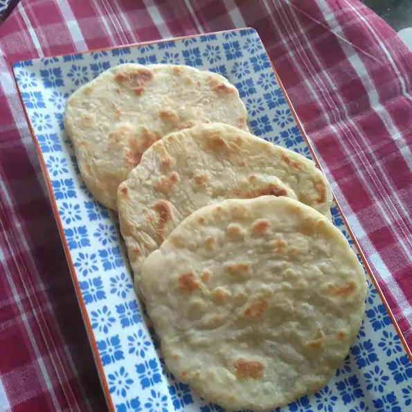

Chapati (East African Bread)
Adopted from Indian cuisine, African bread known as chapati has been a part of East African cuisine for centuries. The East African recipe is slightly different from its Indian counterpart. This bread accompanies African soups and stews well. Preparation is minimal, making this a great choice for cooks in a pinch.

Prep: 15 mins
Cook: 10 mins
Additional: 30 mins
Total: 55 mins
Servings: 6
Ingredients
- 2 cups all-purpose flour
- 1 teaspoon salt
- three quarters of cup warm water, or as needed
- 1 teaspoon vegetable oil
- 2 teaspoons all-purpose floor, or as needed
- 1 tablespoon vegetable oil
Directions
- Mix 2 cups flour and salt together in a bowl. Slowly mix in enough water to make a thick dough. Mix in oil until combined.
- Knead dough on a cool surface for a few minutes, adding a few spoonfuls of flour. Return dough to the bowl, cover with a clean cloth, and let rest for 30 minutes.
- Preheat the oven to 200 degrees F (95 degrees C).
- Heat a skillet or griddle over medium heat.
- Divide dough into orange-sized balls. Flatten into 6-inch circles.
- Fry in batches in the hot skillet, turning once, until golden brown and spotted, 6 to 8 minutes. Repeat with remaining dough. Keep chapatis warm in the oven.
Cook's Notes:
Some people use whole wheat or wholemeal flour (brown bread flour).
One method of flattening the dough is to place the dough between sheets of waxed paper and roll out with a rolling pin.
Nutrition Facts
Per Serving:182 calories; protein 4.4g; carbohydrates 32.5g; fat 3.4g; sodium 389.3mg.
Go to: allrecipes for full details
Contact Wilbrod on: ntawihawilbrod@gmail.com or
n.wilbrod@yahoo.com